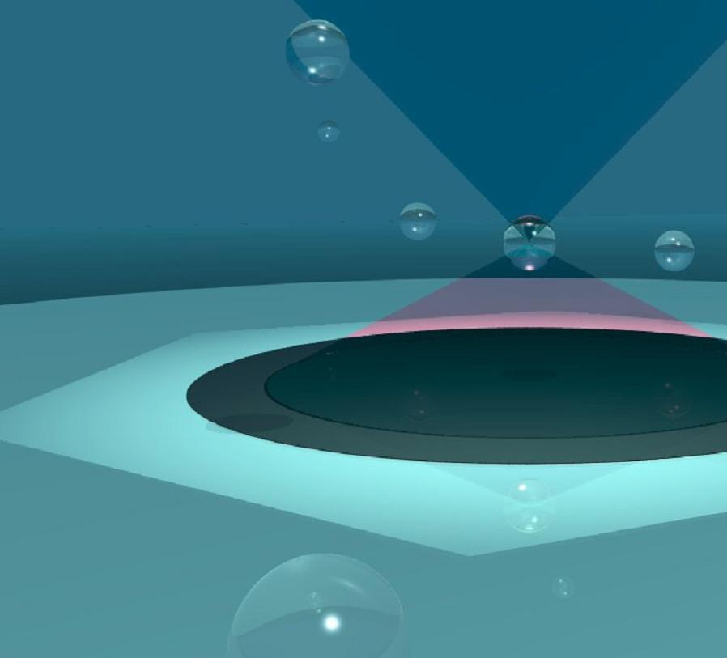
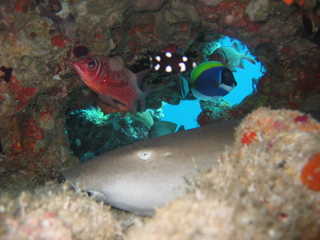
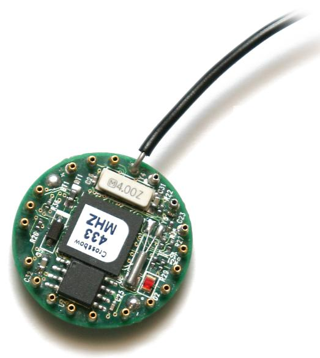
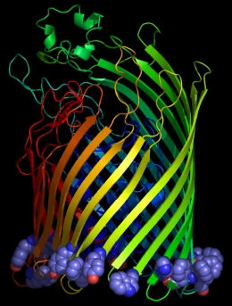

Projects
brownian motion studied by an optical trap
Optical traps are commonly used in biophysics and soft-matter physics to study motion and mechanical properties of nanoscale objects. The goal of the group is to build a functional optical trap that uses highly focused light beam to capture and move spheres of one micrometer in diameter. By recording its motion, we will explore properties of free and confined Brownian motion. If time permits, we will briefly study cell motility.
This project offers a unique mix of theory and experiment where participants will learn principles of instrument design and characterization, as well as essentials of statistical physics. They will also work on data analysis and numerical simulations.
Branimir Lukic
Swiss Federal Institute of Technology (EPFL), Lausanne, Switzerland
Branimir is a doctoral student in physics at the Institute of Physics of Complex Matter. He mainly works with atomic force microscopy and optical traps to study nanomechanics of carbon nanotubes and biological structures. He participates in the S3 since its beginning in 2001.
investigating molecular evolution by biochemical analysis of fish proteins
Each part of an organism has its own defined composition of proteins, which is required for its specific function. For instance, muscular tissue expresses a variety of proteins required to perform physical movement, whereas skin tissues express other proteins, which build a barrier and protection of the organism against various environmental stress. In this project, students will analyze muscle tissue from fish and learn how to visualize and to purify a specific set of proteins. Results obtained from different fish samples will be compared to the existing evolutionary trees. The relationship between genetic information, protein expression and cellular function will be extended in individual theoretical and bioinformatical projects. Experimental part will be accompanied with lectures and discussions and scientific communication skills are introduced through designing posters and presentations.
Isabel Kurth
Swiss Institute for Experimental Cancer Research (ISREC), Lausanne, Switzerland
Isabel is a doctoral student at ISREC, Lausanne, Switzerland. Her research interest focuses on how eukaryotic telomeres are replicated and maintained by telomerase reverse transcriptase (telomerase) and by other telomere binding proteins. As part of the project she is biochemically characterizing human telomerase.
Contructing a wireless sensor network
Pebble-sized, low-power, embedded computers self-organized in loose networks. This concept that not so long ago belonged in science fiction magazines, came to life with the advent of cheap, mass-producible embedded computers and sensors. With industrial, scientific, agricultural and even military applications, wireless sensor networks, sometimes referred to as 'smart dust', are a fascinating solution to many previously insurmountable everyday problems.
The project will give the students a flash-overview of wireless communications, and will then focus on wireless sensor networks. Routing, reliable delivery, and evolving network topologies will be discussed in the context of specific applications. The students will be asked to design, implement and test a simple routing algorithm that will execute on a Telos-series wireless sensor network.
Ivan Krstic
Faculty of Arts and Sciences, Harvard University, USA
Ivan Krstic is a student of computer science at the Faculty of Arts and Sciences, Harvard University. Currently, he is the Director of Research at the Medical Informatics Laboratory at Zagreb Children's Hospital in Croatia. His interests include distributed systems and algorithms, multi-agent systems, applied and theoretical mathematics, cryptography, and large-scale web applications.
deducting protein 3D structure from its amino acid sequence
Proteins are macromolecular building blocks of all living organisms, composed of various numbers of only 20 amino acids. Protein sequence, i.e. the order of amino acids in its chain is unique for every protein, as well as their three-dimensional arrangement. Protein 3D structure is necessary for deeper understanding of its function- however, it is a very challenging task to obtain it experimentally. A major goal of structural bioinformatics is to predict the 3D structure from the protein sequence. One method that can be applied is homology modeling, a procedure that develops protein 3D structure based on its sequence and the known structures of similar (homologous) proteins.
The students will each be given a different protein sequence to study. They will learn how to extract the wealth of information stored in a protein sequence, like establishing evolutionary relationship between proteins and getting hints on their structure and function in the cell. The tertiary structure of a protein will be obtained by homology modeling through a series of computational steps.
Anita Krisko
Rudjer Boskovic Institute, Zagreb, Croatia
Anita is a doctoral student in molecular biophysics at Rudjer Boskovic Institute, Zagreb, Croatia. Her research is mainly focused on structure-function correlation in human low density lipoproteins. Her interests also include structural biology and bioinformatics.
studying imapct craters in loose media
 Although geophysicists have long been interested in impact craters, several properties of these craters were not experimentally studied in a lab until recently. This group experiments with low-speed impact craters of different balls in sand and aims to derive scaling laws describing the behavior without full theoretical understanding of the processes involved. Furthermore, a simple numerical impact simulation can be developed and compared to real data.
Although geophysicists have long been interested in impact craters, several properties of these craters were not experimentally studied in a lab until recently. This group experiments with low-speed impact craters of different balls in sand and aims to derive scaling laws describing the behavior without full theoretical understanding of the processes involved. Furthermore, a simple numerical impact simulation can be developed and compared to real data.
The project involves experimental measurements and analysis of data with acquisition errors. Participants will also see the principle of scaling, optionally learn about numerical simulations and maybe even a bit of electronics.
Wolfgang Wieser
University of Munich (LMU), Germany
Wolfgang is a final year physics student at the University of Munich, Germany. He is working as a designer of digital electronics at the LMU and will start his diploma thesis this year in the field of quantum optics. His further interests include realistic image synthesis, numerical simulations and some photography and biology.